[Day 7 종합실습] JOIN · 서브쿼리 · 윈도우함수 복합 쿼리 실습
AI 서비스를 위한 SW 기초 Full-stack Engineering — 스마트 데이터 이해 및 활용 | 종합실습-2 | 광주캠퍼스 4반 박영서 | 2026-07-23
실습 결과 요약
- 실행환경: PostgreSQL 17.10 — DB skala_db · 스키마 lab · 사용자 skala_user (일반 권한 롤)
- 데이터: student 1,000 · enroll 2,302(고아 수강 2건 포함) · customers 500 · orders 3,000 · emp 311
- 문항 1~25 전부 실제 실행 — 문항별로 ① psql CLI + ② pgAdmin 4 Query Tool 양쪽 실행 화면(쿼리+결과 동시 표시) 수록
- 교재 지시(
Postgres/MySQL: LIMIT 5)에 따라 대량 결과는 LIMIT 5로 출력 제한, 주석에 전체 행 수 명시 (Q8·Q13은 문항 지정 건수 유지)
- 채점 기준 준수 — 요구사항 1:1 반영(문항 원문을 쿼리 주석으로 표기),
SELECT * 미사용(필요 컬럼만 선택)
- 쿼리 2개 문항(12·22·25)은 쿼리별로 각각 실행·캡처, Q23은 서브쿼리·CTE 두 방식 모두 작성
0. 실습 환경 확인
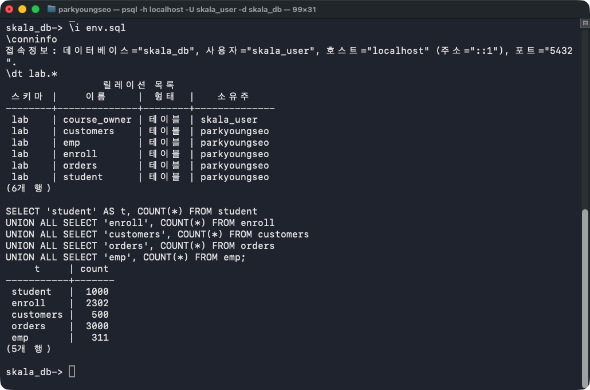
skala_user로 skala_db 접속(\conninfo), lab 스키마 테이블과 테이블별 건수 확인.
1. 학생과 수강을 INNER JOIN하여 수강 존재 학생의 과목/성적을 조회
SQL
-- Q1. 학생과 수강을 INNER JOIN하여 수강 존재 학생의 과목/성적을 조회
SELECT s.student_id, s.name, e.course, e.grade
FROM student s
JOIN enroll e ON e.student_id = s.student_id
ORDER BY s.student_id, e.course
LIMIT 5; -- 출력 확인용 (전체 행 수는 리포트에 별도 표기)
실행 결과 ① — psql
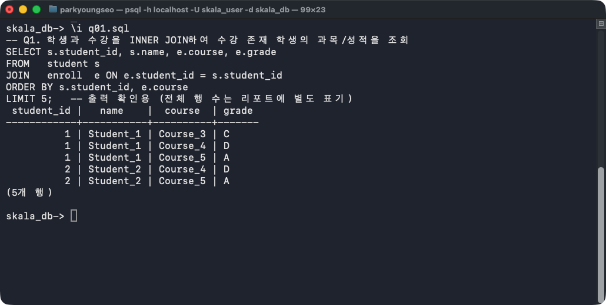
실행 결과 ② — pgAdmin 4 Query Tool
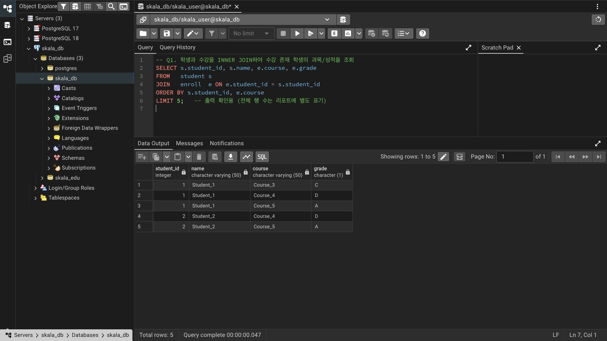
INNER JOIN — 양쪽 매칭 행만 조회 (전체 2,300행 중 상위 5행 표시).
2. 모든 학생 기준으로 수강을 붙이고, 과목(없으면 NULL)까지 보이기
SQL
-- Q2. 모든 학생 기준으로 수강을 붙이고, 과목(없으면 NULL)까지 보이기 (LEFT JOIN)
SELECT s.student_id, s.name, e.course
FROM student s
LEFT JOIN enroll e ON e.student_id = s.student_id
ORDER BY s.student_id, e.course
LIMIT 5; -- 출력 확인용 (전체 행 수는 리포트에 별도 표기)
실행 결과 ① — psql
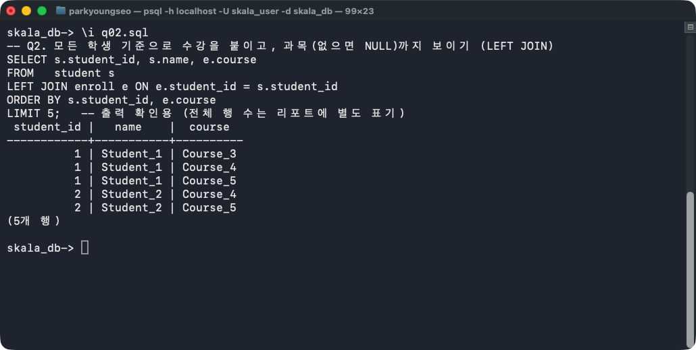
실행 결과 ② — pgAdmin 4 Query Tool
LEFT JOIN — 미수강 학생은 course가 NULL로 표시 (전체 2,400행).
3. 수강이 기준. 학생이 없으면 학생 정보가 NULL (RIGHT JOIN)
SQL
-- Q3. 수강이 기준. 학생이 없으면 학생 정보가 NULL (RIGHT JOIN)
SELECT e.student_id, e.course, e.grade, s.name
FROM student s
RIGHT JOIN enroll e ON e.student_id = s.student_id
ORDER BY (s.student_id IS NULL) DESC, -- 학생 정보 없는 행(유령)이 위로 오도록
e.student_id, e.course
LIMIT 5; -- 출력 확인용 (전체 2,302행)
실행 결과 ① — psql
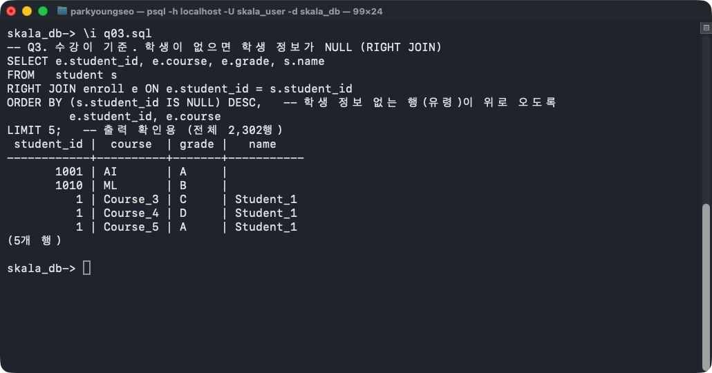
실행 결과 ② — pgAdmin 4 Query Tool
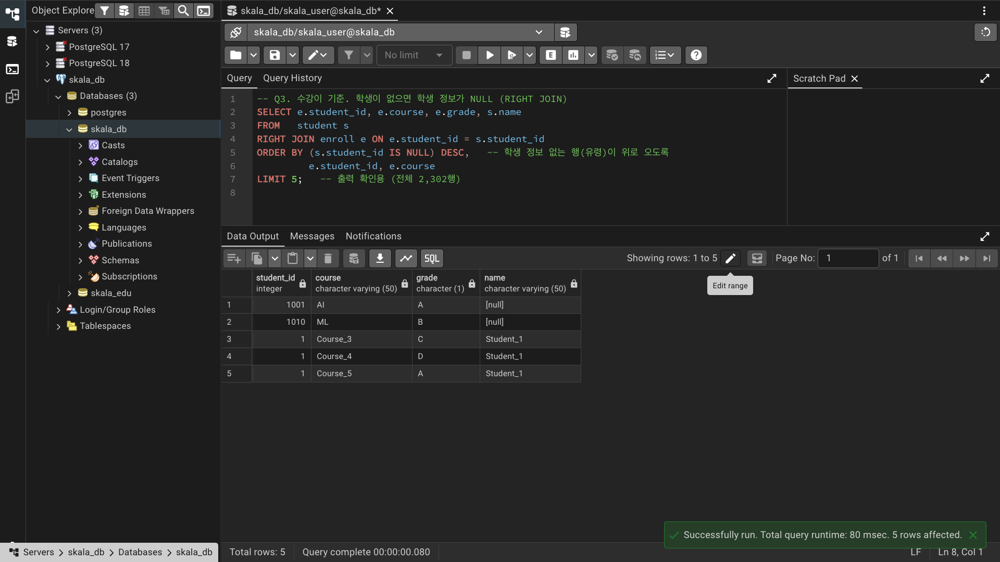
RIGHT JOIN — 학생 정보가 없는 고아 수강(1001·1010)이 name NULL로 상단 표시 (전체 2,302행).
4. 학생/수강 모두 포함 (FULL OUTER JOIN)
SQL
-- Q4. 학생/수강 모두 포함 (FULL OUTER JOIN)
SELECT s.student_id AS s_id, s.name, e.student_id AS e_id, e.course
FROM student s
FULL OUTER JOIN enroll e ON e.student_id = s.student_id
ORDER BY (s.student_id IS NULL) DESC, -- 비매칭 행(유령 수강, 미수강 학생)이 위로 오도록
(e.student_id IS NULL) DESC,
COALESCE(s.student_id, e.student_id), e.course
LIMIT 5; -- 출력 확인용 (전체 2,402행)
실행 결과 ① — psql
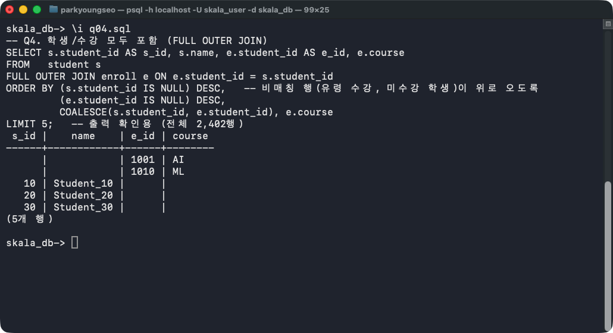
실행 결과 ② — pgAdmin 4 Query Tool
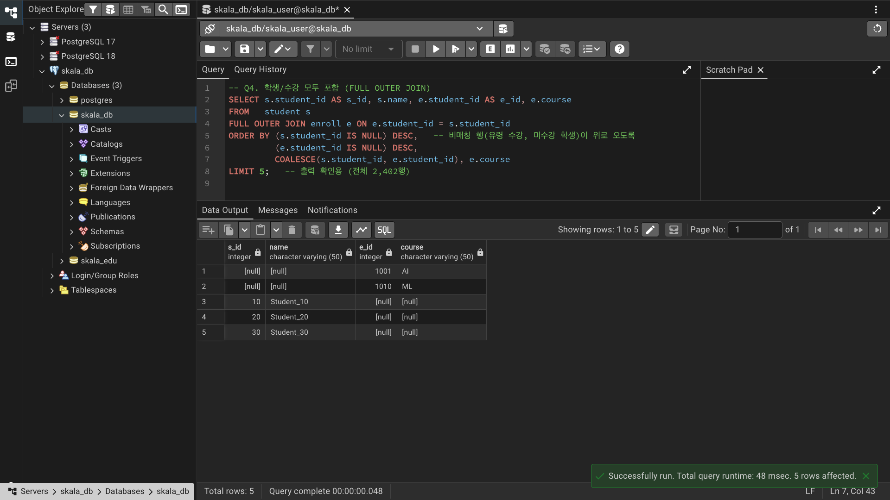
FULL OUTER JOIN — 고아 수강 2건 + 미수강 학생이 함께 포함 (전체 2,402행).
5. 한 번도 수강하지 않은 학생 목록
SQL
-- Q5. 한 번도 수강하지 않은 학생 목록 (LEFT JOIN + IS NULL)
SELECT s.student_id, s.name
FROM student s
LEFT JOIN enroll e ON e.student_id = s.student_id
WHERE e.student_id IS NULL
ORDER BY s.student_id
LIMIT 5; -- 출력 확인용 (전체 행 수는 리포트에 별도 표기)
실행 결과 ① — psql
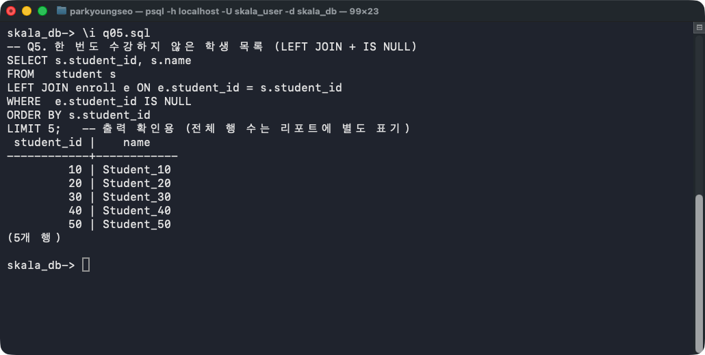
실행 결과 ② — pgAdmin 4 Query Tool
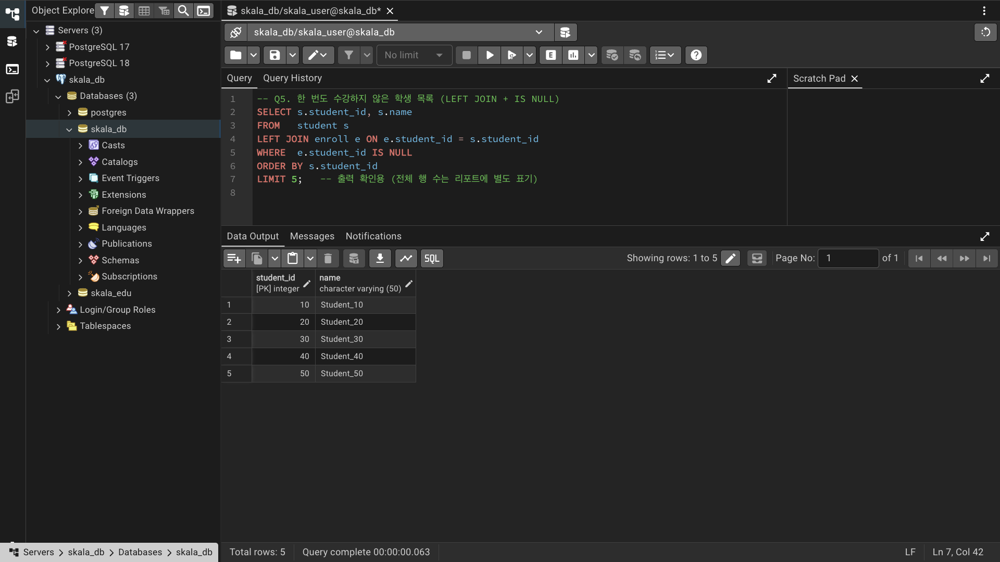
LEFT JOIN + IS NULL 안티 조인 — 미수강 학생 전체 100명 중 상위 5명.
6. 한 과목 이상 수강한 학생 목록 (중복 제거)
SQL
-- Q6. 한 과목 이상 수강한 학생 목록 (중복 제거)
SELECT DISTINCT s.student_id, s.name
FROM student s
JOIN enroll e ON e.student_id = s.student_id
ORDER BY s.student_id
LIMIT 5; -- 출력 확인용 (전체 행 수는 리포트에 별도 표기)
실행 결과 ① — psql
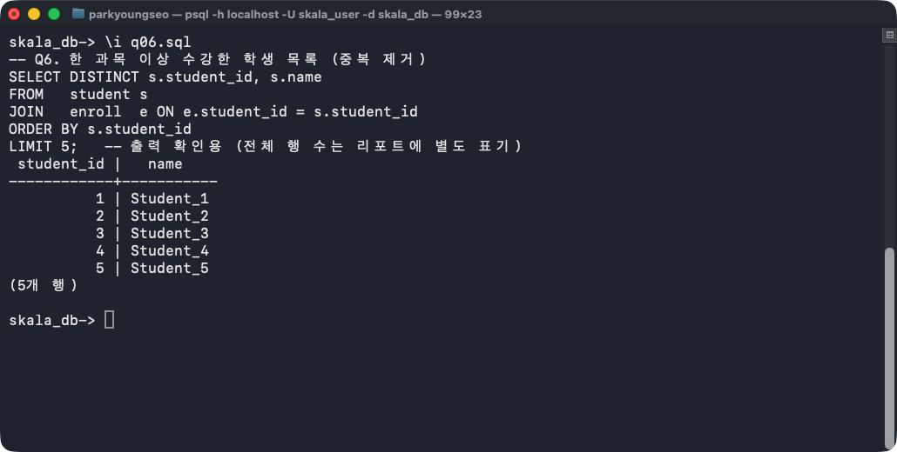
실행 결과 ② — pgAdmin 4 Query Tool
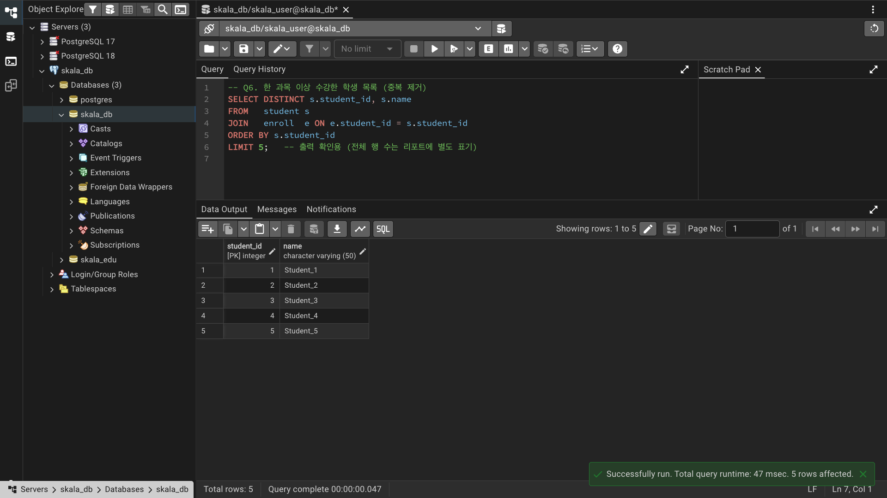
JOIN + DISTINCT 세미 조인 — 수강 이력 보유 학생 900명 중 상위 5명.
7. 고객별 주문건수/총액
SQL
-- Q7. 고객별 주문건수/총액
SELECT c.customer_id, c.customer_name, COUNT(*) AS order_count, SUM(o.amount) AS total_amount
FROM customers c
JOIN orders o ON o.customer_id = c.customer_id
GROUP BY c.customer_id, c.customer_name
ORDER BY c.customer_id
LIMIT 5; -- 출력 확인용 (전체 행 수는 리포트에 별도 표기)
실행 결과 ① — psql
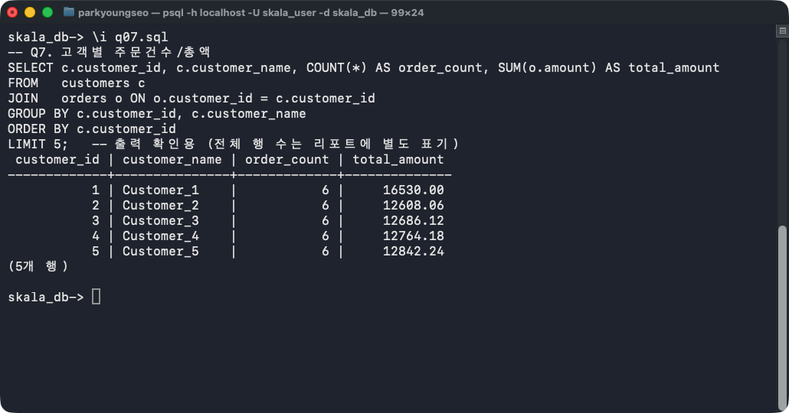
실행 결과 ② — pgAdmin 4 Query Tool
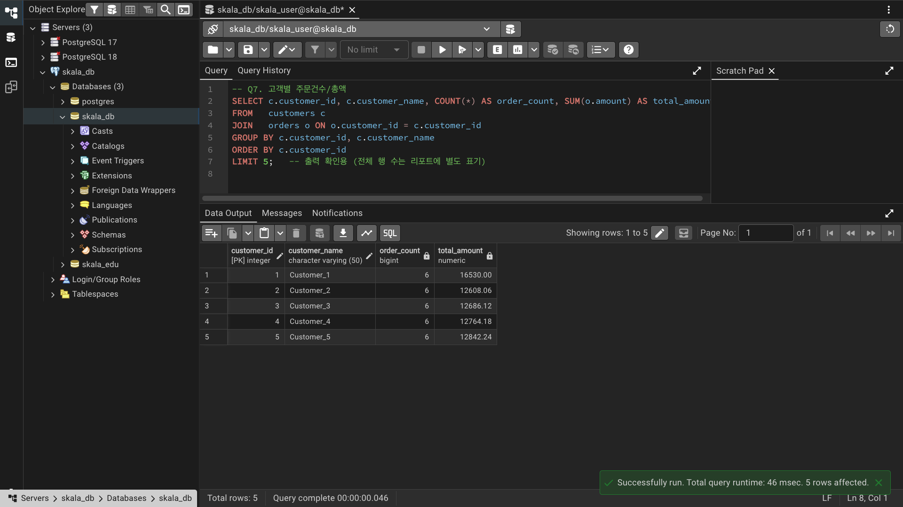
고객별 집계 — 교재 배경대로 고객 1명당 정확히 6건의 주문 확인 (전체 500행).
8. 총액 상위 10명과 금액
SQL
-- Q8. 총액 상위 10명과 금액
SELECT c.customer_name, SUM(o.amount) AS total_amount
FROM customers c
JOIN orders o ON o.customer_id = c.customer_id
GROUP BY c.customer_name
ORDER BY total_amount DESC
LIMIT 10;
실행 결과 ① — psql
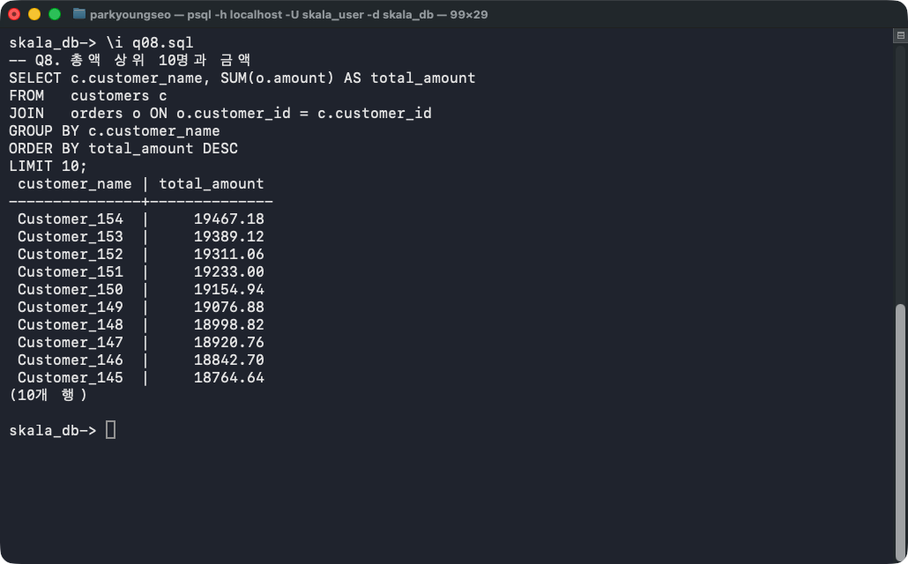
실행 결과 ② — pgAdmin 4 Query Tool
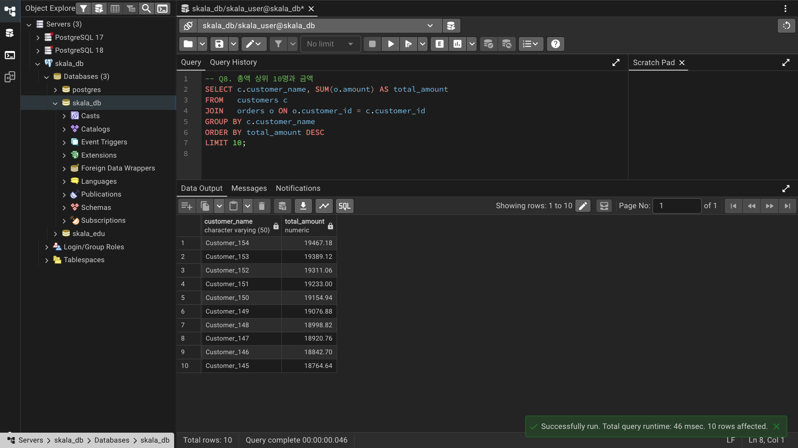
ORDER BY 총액 DESC + LIMIT 10 — 상위 10명 전체 표시 (문항 지정 건수).
9. 모든 직원과 그 매니저 이름
SQL
-- Q9. 모든 직원과 그 매니저 이름 (CEO는 매니저가 없어 NULL, LEFT SELF JOIN)
SELECT e.name AS employee, m.name AS manager
FROM emp e
LEFT JOIN emp m ON m.emp_id = e.manager_id
ORDER BY e.emp_id
LIMIT 5; -- 출력 확인용 (전체 311행)
실행 결과 ① — psql
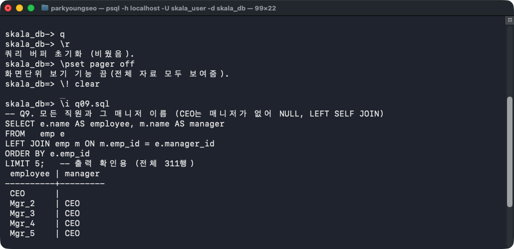
실행 결과 ② — pgAdmin 4 Query Tool
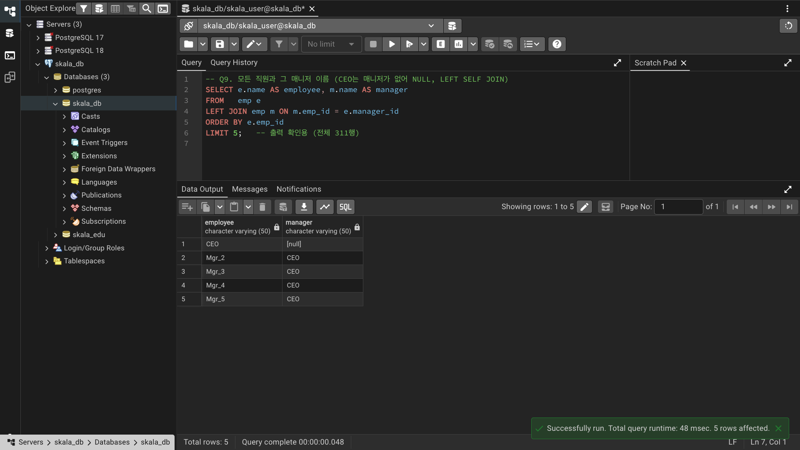
LEFT SELF JOIN — 문항 요구대로 직원·매니저 이름만 선택, CEO는 manager가 NULL (전체 311행).
10. “모든 학생 기준”으로 과목 분포 → LEFT JOIN + 집계
SQL
-- Q10. "모든 학생 기준"으로 과목 분포 → LEFT JOIN + 집계 (미수강은 NULL 그룹으로 표시)
SELECT e.course, COUNT(s.student_id) AS student_count
FROM student s
LEFT JOIN enroll e ON e.student_id = s.student_id
GROUP BY e.course
ORDER BY e.course NULLS LAST;
실행 결과 ① — psql
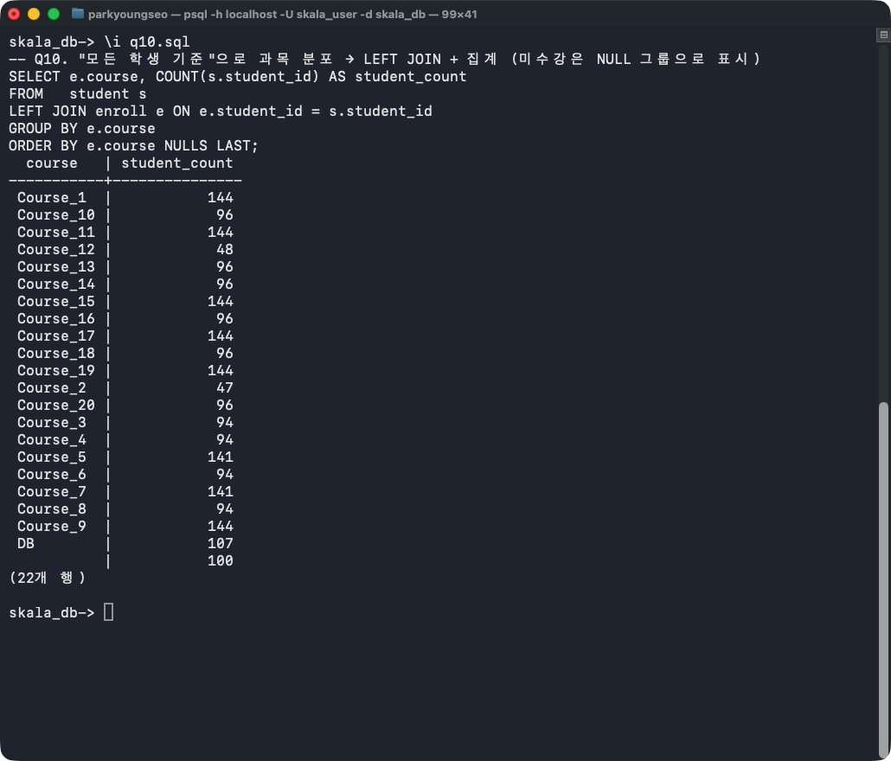
실행 결과 ② — pgAdmin 4 Query Tool
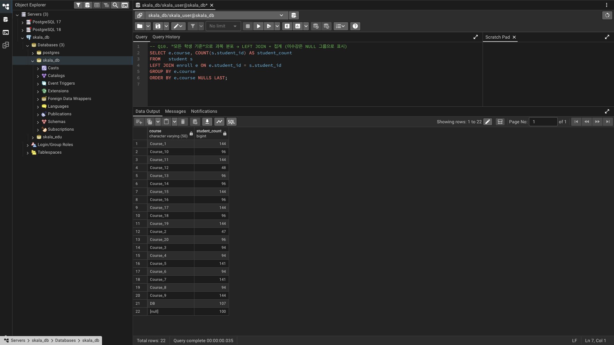
LEFT JOIN 후 과목별 집계 — 미수강 그룹(NULL) 포함 (전체 22행: 수강 과목 21종 + NULL 그룹. 고아 수강 전용 과목 AI·ML은 학생 기준 조인이라 미포함).
11. DB 과목을 듣지 않은 모든 학생을 나열
SQL
-- Q11. DB 과목을 듣지 않은 모든 학생을 나열 (NOT EXISTS)
SELECT s.student_id, s.name
FROM student s
WHERE NOT EXISTS (
SELECT 1 FROM enroll e
WHERE e.student_id = s.student_id AND e.course = 'DB'
)
ORDER BY s.student_id
LIMIT 5; -- 출력 확인용 (전체 행 수는 리포트에 별도 표기)
실행 결과 ① — psql
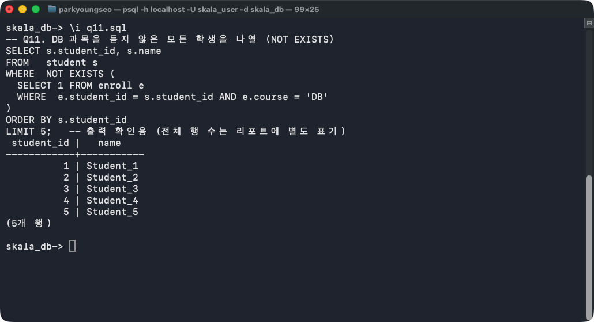
실행 결과 ② — pgAdmin 4 Query Tool
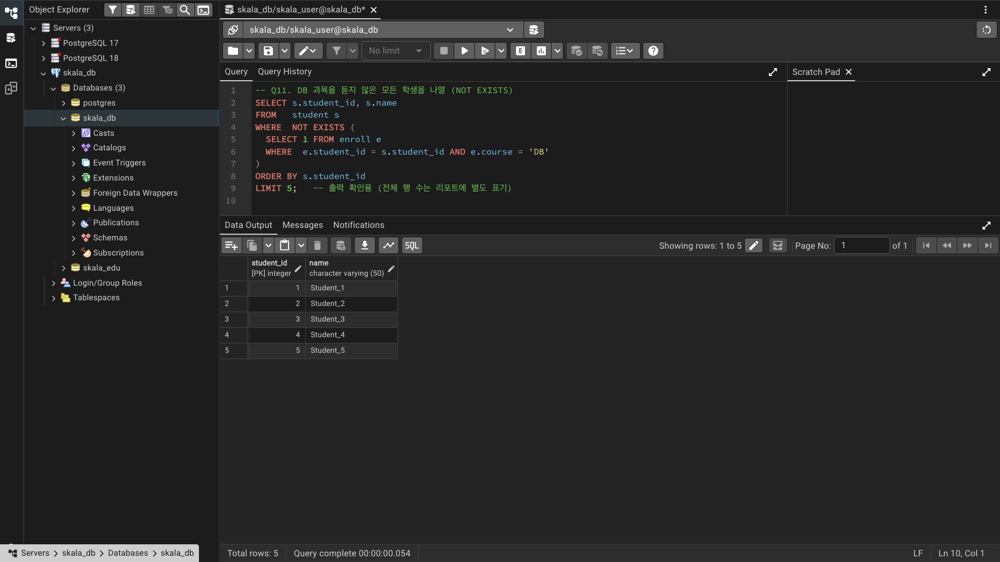
NOT EXISTS 안티 조인 — DB 미수강 893명 중 상위 5명.
12. course_owner(course, manager_id) 생성 후 과목별 수강 인원 + 책임 매니저 이름 리포트
SQL
-- Q12. 과목별 매니저 운영 책임 가정: course_owner(course, manager_id) 생성 후
-- 과목별 수강 인원 + 책임 매니저 이름 리포트
DROP TABLE IF EXISTS course_owner;
CREATE TABLE course_owner AS
SELECT c.course,
m.emp_id AS manager_id
FROM (SELECT DISTINCT course FROM enroll) c
JOIN LATERAL (
SELECT emp_id
FROM emp
WHERE name LIKE 'Mgr\_%'
ORDER BY emp_id
OFFSET (ascii(right(c.course, 1)) % 10) LIMIT 1 -- 과목→매니저 임의 매핑
) m ON TRUE;
SELECT co.course,
COUNT(e.student_id) AS enroll_count,
m.name AS owner_manager
FROM course_owner co
LEFT JOIN enroll e ON e.course = co.course
JOIN emp m ON m.emp_id = co.manager_id
GROUP BY co.course, m.name
ORDER BY co.course;
실행 결과 ① — psql (a — course_owner 생성)
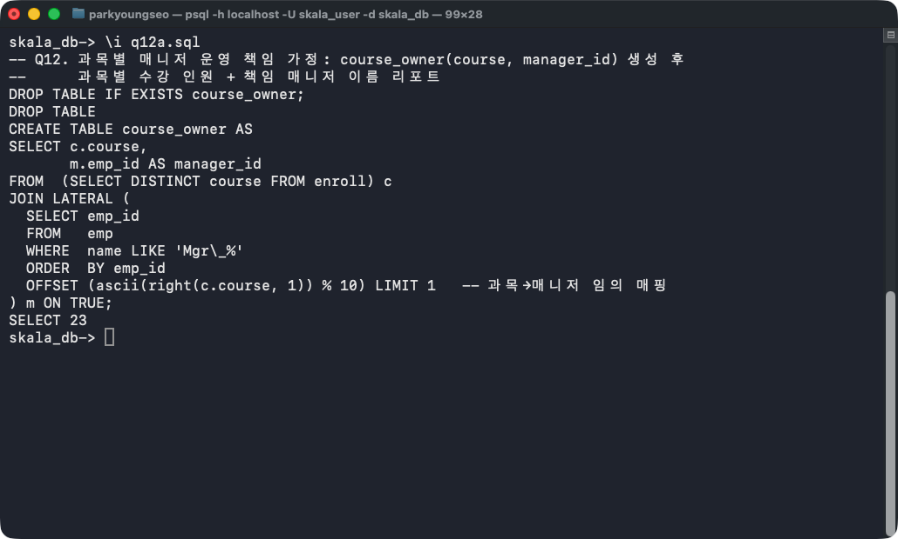
실행 결과 ① — psql (b — 과목별 리포트)
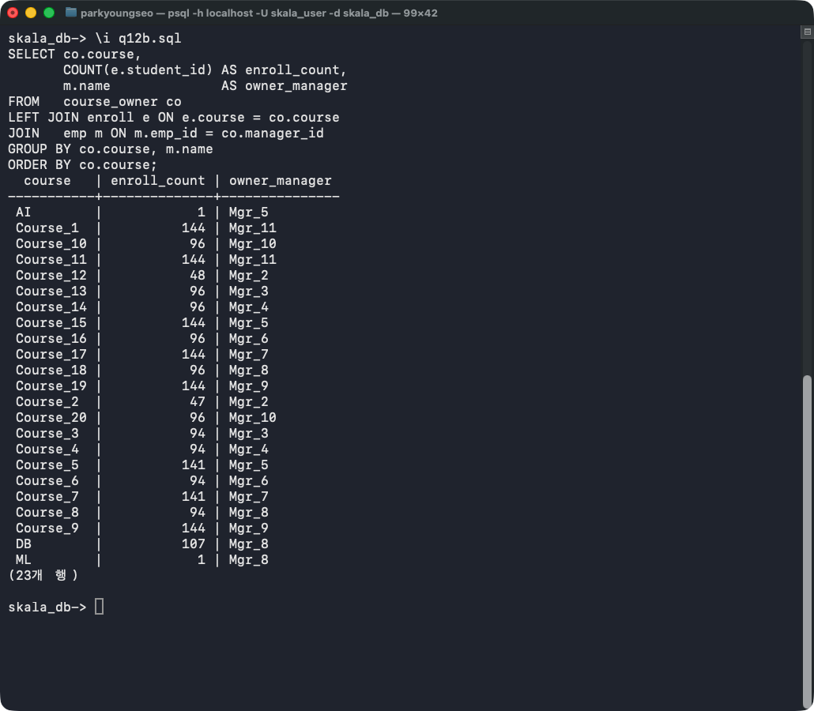
실행 결과 ② — pgAdmin 4 Query Tool
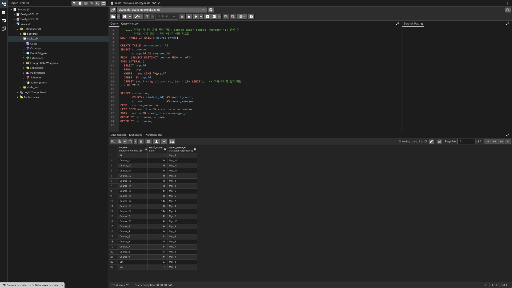
(a) CTAS + LATERAL로 course_owner 23건(과목 23종) 생성 → (b) 과목별 수강 인원 + 책임 매니저 리포트 (23행).
13. 학생 × 과목 전체 조합으로 “학생별 과목 추천 후보” 생성, 샘플 100건
SQL
-- Q13. 학생 × 과목 전체 조합(CROSS JOIN)으로 "학생별 과목 추천 후보" 생성, 샘플 100건만 조회
SELECT s.student_id, s.name, c.course
FROM student s
CROSS JOIN (SELECT DISTINCT course FROM enroll) c
ORDER BY s.student_id, c.course
LIMIT 100;
실행 결과 ① — psql (쿼리 + 상단)
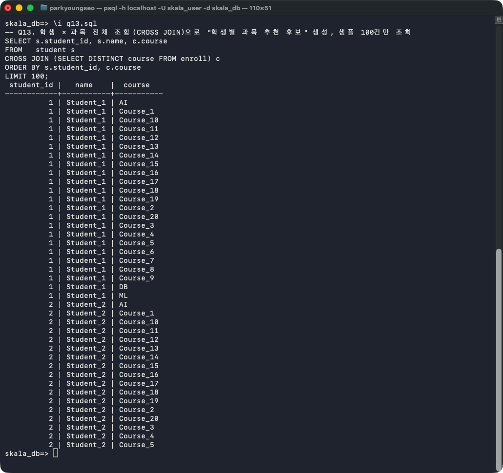
실행 결과 ① — psql (말미 — 100개 행 확인)
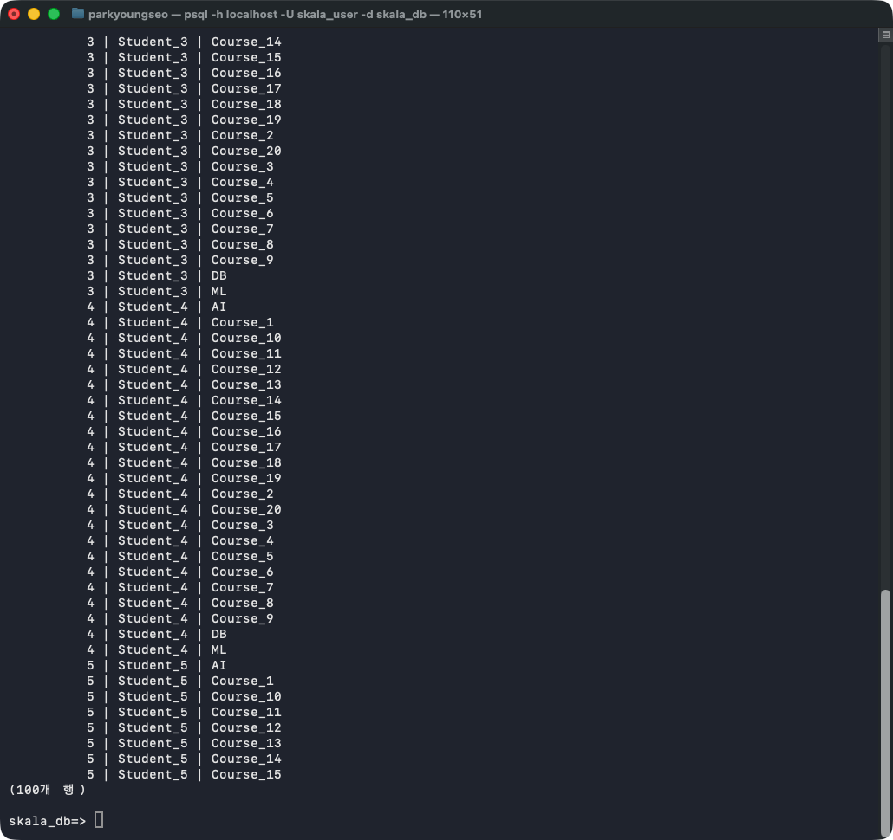
실행 결과 ② — pgAdmin 4 Query Tool
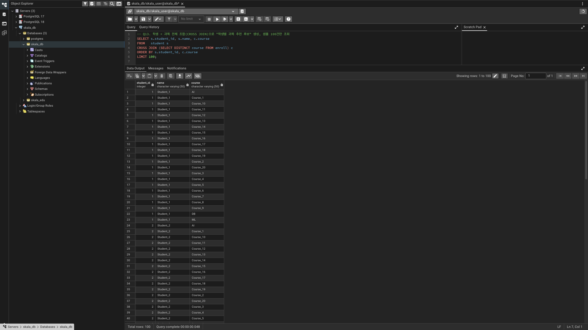
CROSS JOIN — 학생 1,000명 × 과목 23종(고아 수강의 AI·ML 포함) 조합 중 샘플 100건(문항 지정)만 조회. psql 화면은 쿼리+상단 / 말미 "(100개 행)" 2장 구성.
14. 스칼라 서브쿼리(SELECT 절)로 학생 + 소속 학과명 붙이기
※ 여기서 "붙이기"는 학생 정보와 소속 학과명 컬럼을 연속해서(붙여서) 출력하는 것으로 해석함 — 스칼라 서브쿼리로 구한 학과명(major)을 student_id·name 옆에 컬럼으로 나란히 붙여 출력하였다.
SQL
-- Q14. 스칼라 서브쿼리(SELECT 절)로 학생 + 소속 학과명 붙이기
SELECT s.student_id,
s.name,
(SELECT s2.major FROM student s2 WHERE s2.student_id = s.student_id) AS major
FROM student s
ORDER BY s.student_id
LIMIT 5; -- 출력 확인용 (전체 행 수는 리포트에 별도 표기)
실행 결과 ① — psql
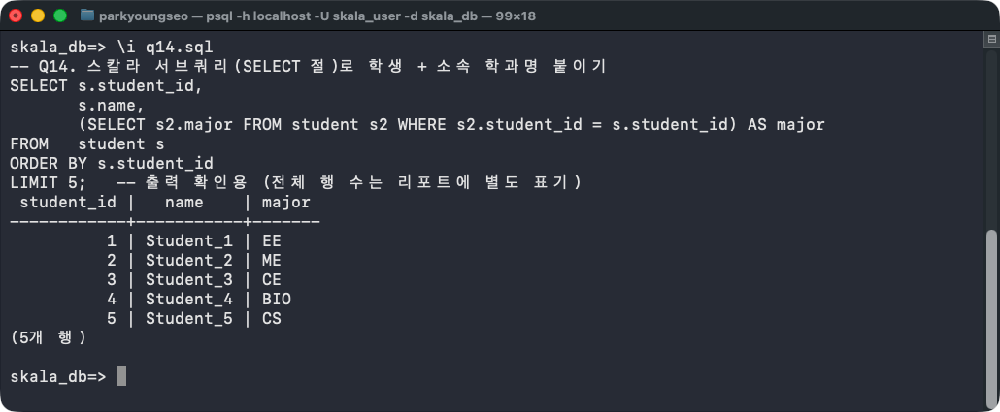
실행 결과 ② — pgAdmin 4 Query Tool
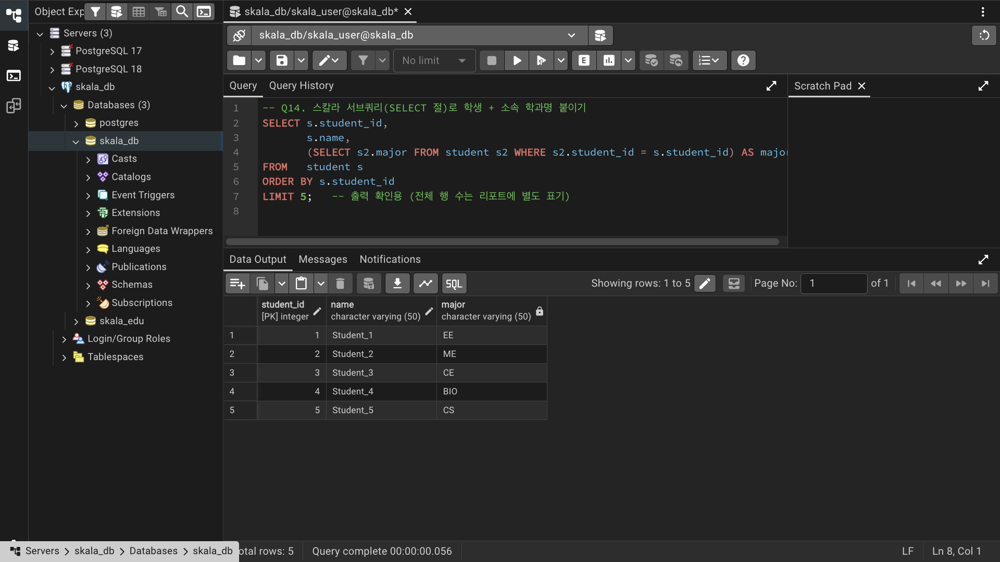
SELECT 절 스칼라 서브쿼리로 행마다 학과명을 붙임 (전체 1,000행).
15. 평균 GPA보다 높은 학생 (WHERE 서브쿼리)
SQL
-- Q15. 평균 GPA보다 높은 학생 (WHERE 서브쿼리)
SELECT student_id, name, gpa
FROM student
WHERE gpa > (SELECT AVG(gpa) FROM student)
ORDER BY student_id
LIMIT 5; -- 출력 확인용 (전체 행 수는 리포트에 별도 표기)
실행 결과 ① — psql
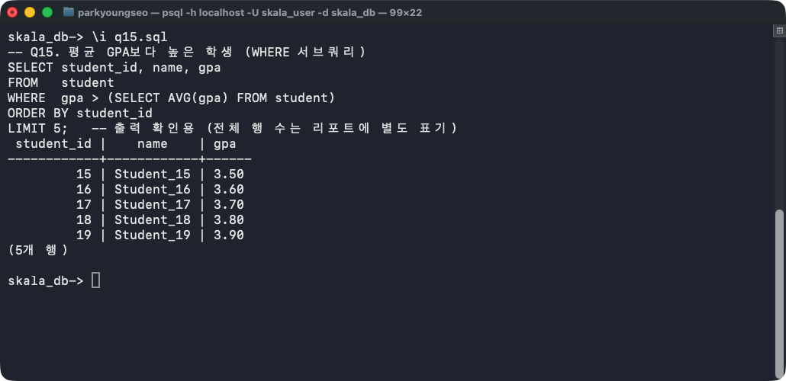
실행 결과 ② — pgAdmin 4 Query Tool
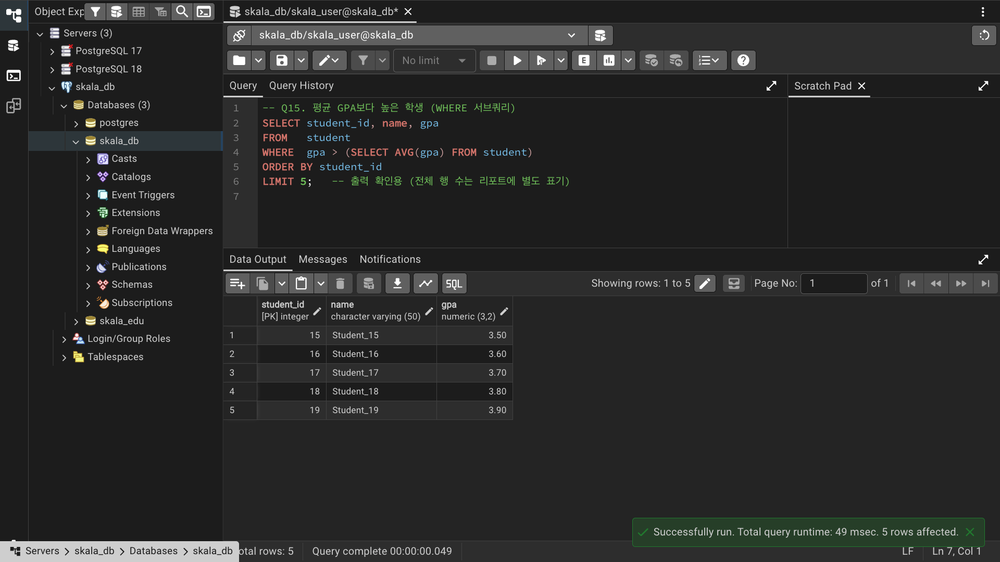
WHERE 서브쿼리 — 전체 평균 GPA(≈3.44) 초과 495명 중 상위 5명.
16. 자신의 학과 평균 GPA보다 높은 학생 (Correlated subquery)
SQL
-- Q16. 자신의 학과 평균 GPA보다 높은 학생 (Correlated subquery)
SELECT s.student_id, s.name, s.major, s.gpa
FROM student s
WHERE s.gpa > (SELECT AVG(s2.gpa) FROM student s2 WHERE s2.major = s.major)
ORDER BY s.student_id
LIMIT 5; -- 출력 확인용 (전체 행 수는 리포트에 별도 표기)
실행 결과 ① — psql
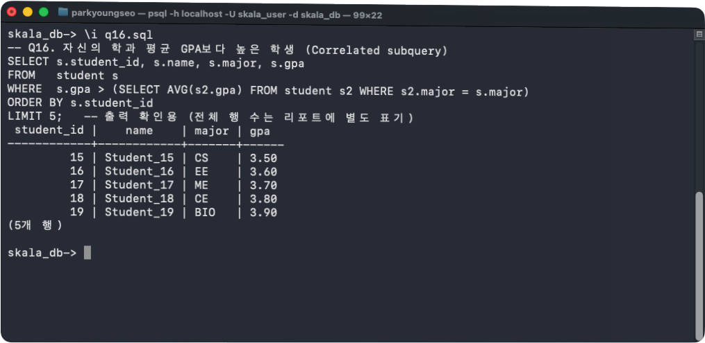
실행 결과 ② — pgAdmin 4 Query Tool
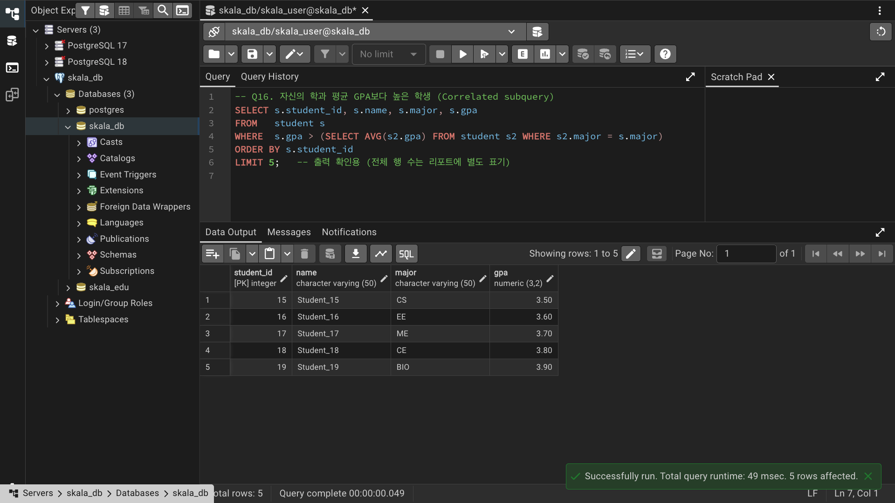
상관 서브쿼리 — 행마다 자기 학과 평균과 비교, 495명 중 상위 5명.
17. 수강(enroll) 기록이 있는 학생만 (EXISTS)
SQL
-- Q17. 수강(enroll) 기록이 있는 학생만 (EXISTS)
SELECT s.student_id, s.name
FROM student s
WHERE EXISTS (SELECT 1 FROM enroll e WHERE e.student_id = s.student_id)
ORDER BY s.student_id
LIMIT 5; -- 출력 확인용 (전체 행 수는 리포트에 별도 표기)
실행 결과 ① — psql
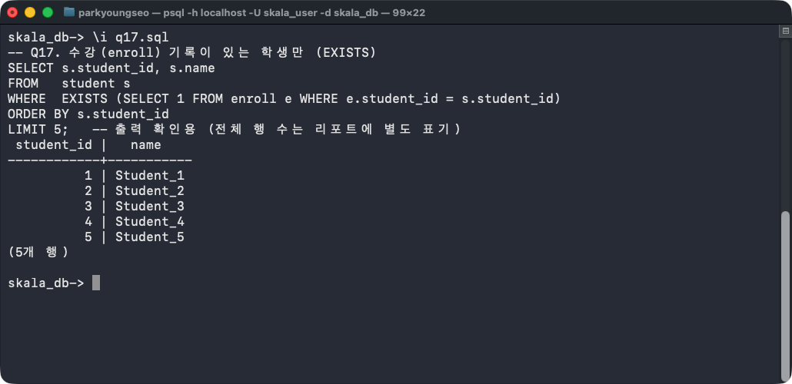
실행 결과 ② — pgAdmin 4 Query Tool
EXISTS 세미 조인 — Q6과 동일 결과(900명)를 다른 기법으로 구현.
18. 한 번도 수강하지 않은 학생 (NOT EXISTS)
SQL
-- Q18. 한 번도 수강하지 않은 학생 (NOT EXISTS)
SELECT s.student_id, s.name
FROM student s
WHERE NOT EXISTS (SELECT 1 FROM enroll e WHERE e.student_id = s.student_id)
ORDER BY s.student_id
LIMIT 5; -- 출력 확인용 (전체 행 수는 리포트에 별도 표기)
실행 결과 ① — psql
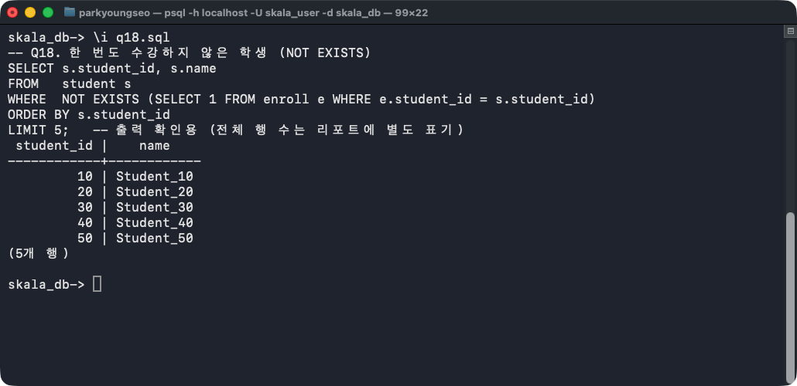
실행 결과 ② — pgAdmin 4 Query Tool
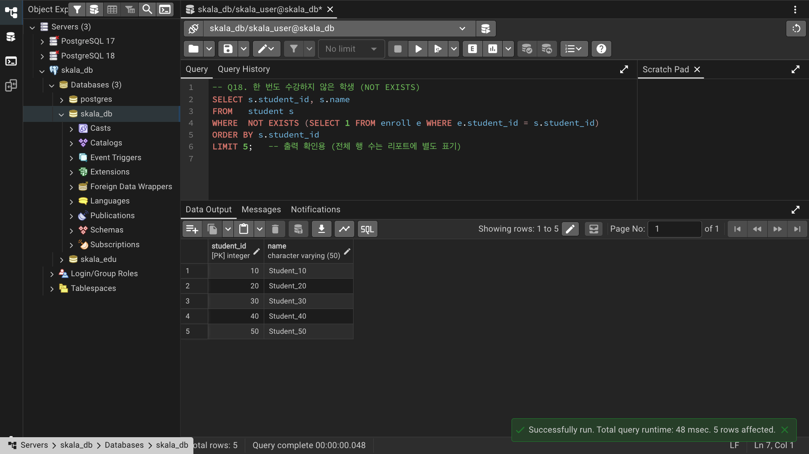
NOT EXISTS — Q5와 동일 결과(100명)를 다른 기법으로 구현.
19. HR 학과 학생 일부와의 비교 데모 (> ANY)
SQL
-- Q19. HR 학과 학생 일부와의 비교 데모 (> ANY: HR 학생 중 한 명보다라도 GPA가 높으면 포함)
SELECT student_id, name, gpa
FROM student
WHERE gpa > ANY (SELECT gpa FROM student WHERE major = 'HR')
ORDER BY student_id
LIMIT 5; -- 출력 확인용 (전체 행 수는 리포트에 별도 표기)
실행 결과 ① — psql
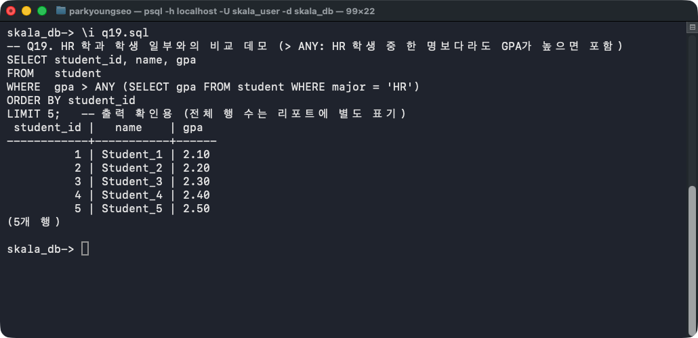
실행 결과 ② — pgAdmin 4 Query Tool
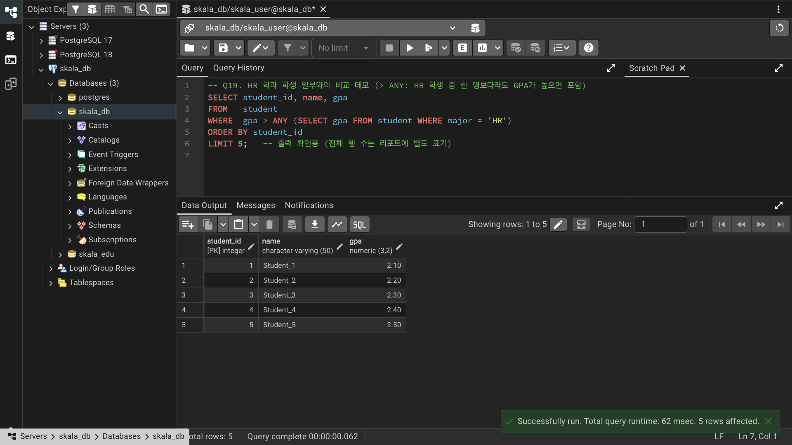
> ANY — HR 학과 최저 GPA(2.0)보다 높으면 포함, 967명 중 상위 5명.
20. CS 학과 학생 또는 DB 과목을 수강한 학생 목록 (UNION)
SQL
-- Q20. CS 학과 학생 또는 DB 과목을 수강한 학생 목록 (UNION으로 중복 제거)
SELECT s.student_id, s.name
FROM student s
WHERE s.major = 'CS'
UNION
SELECT s.student_id, s.name
FROM student s
JOIN enroll e ON e.student_id = s.student_id
WHERE e.course = 'DB'
ORDER BY student_id
LIMIT 5; -- 출력 확인용 (전체 행 수는 리포트에 별도 표기)
실행 결과 ① — psql
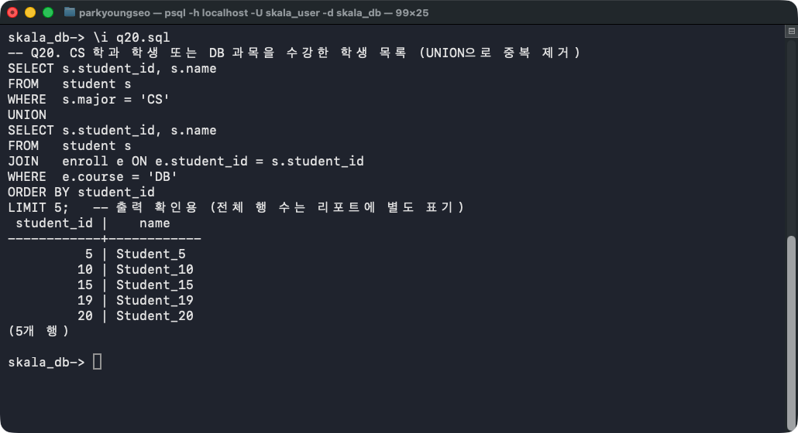
실행 결과 ② — pgAdmin 4 Query Tool
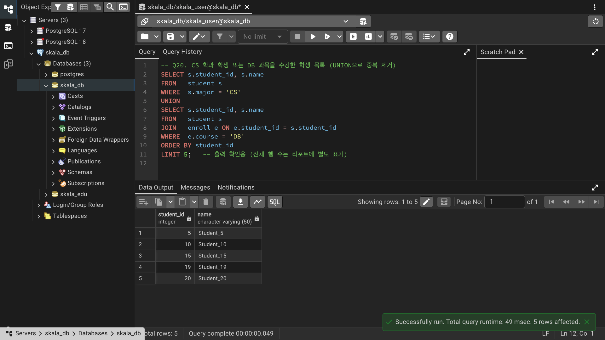
UNION — CS 학과(196명) ∪ DB 수강생 = 중복 제거 후 290명 중 상위 5명.
21. 학과별·GPA 구간별 인원 집계 — ROLLUP 소계/총계 + GROUPING 라벨
SQL
-- Q21. 학과별·GPA 구간별 인원 집계 + ROLLUP 소계/총계
-- - gpa_tier 파생 컬럼(3.0 미만 / 3.0~3.5 / 3.5 초과)
-- - GROUP BY ROLLUP(major, gpa_tier), GROUPING(major)으로 '전체' 라벨
-- - 소계 행은 하단 정렬
SELECT CASE WHEN GROUPING(t.major) = 1 THEN '전체' ELSE t.major END AS major,
CASE WHEN GROUPING(t.gpa_tier) = 1 THEN '소계' ELSE t.gpa_tier END AS gpa_tier,
COUNT(*) AS student_count
FROM (
SELECT major,
CASE WHEN gpa < 3.0 THEN '3.0 미만'
WHEN gpa <= 3.5 THEN '3.0~3.5'
ELSE '3.5 초과'
END AS gpa_tier
FROM student
) t
GROUP BY ROLLUP(t.major, t.gpa_tier)
ORDER BY GROUPING(t.major), t.major, GROUPING(t.gpa_tier), t.gpa_tier;
실행 결과 ① — psql
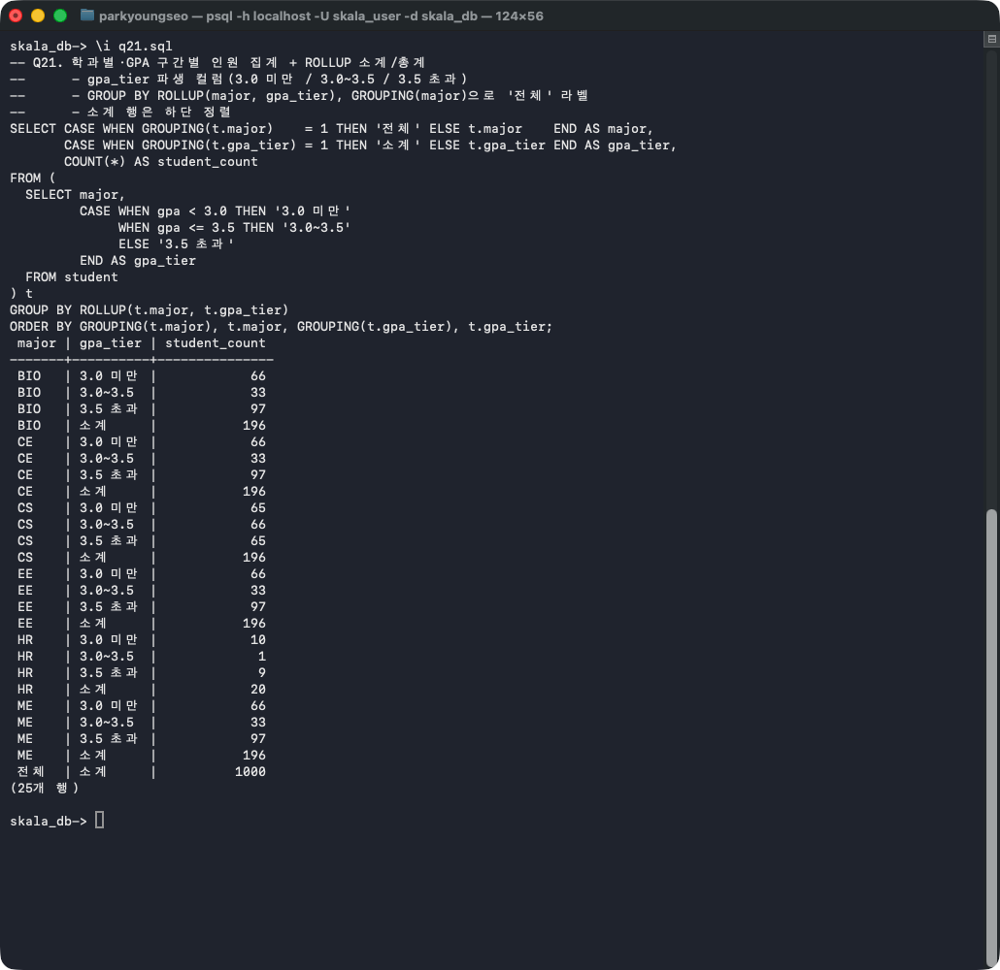
실행 결과 ② — pgAdmin 4 Query Tool
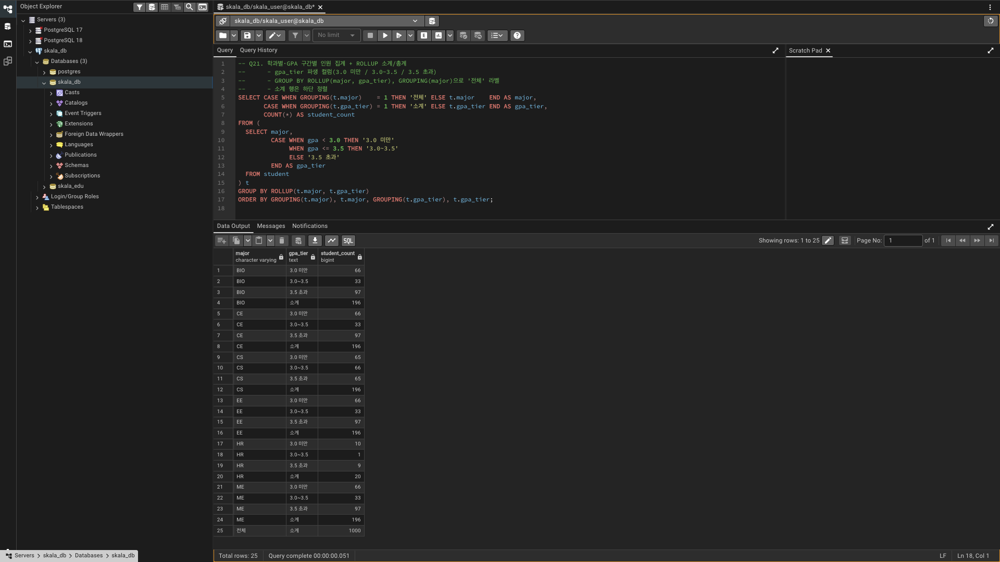
ROLLUP(major, gpa_tier) + GROUPING — 학과×구간 + 학과 소계 + 총계('전체') 25행, 소계는 하단 정렬.
22. WITH RECURSIVE 조직 트리 (depth/path) + 매니저별 direct_reports
SQL
-- Q22. WITH RECURSIVE 조직 트리: 모든 직원의 계층 경로(path)와 깊이(depth)
WITH RECURSIVE org AS (
SELECT emp_id, name, manager_id, 0 AS depth, name::text AS path
FROM emp
WHERE manager_id IS NULL -- CEO에서 시작
UNION ALL
SELECT e.emp_id, e.name, e.manager_id, o.depth + 1, o.path || ' > ' || e.name
FROM emp e
JOIN org o ON o.emp_id = e.manager_id
)
SELECT emp_id, name, depth, path
FROM org
ORDER BY path
LIMIT 5; -- 출력 확인용 (전체 311행)
-- Q22-2. 매니저별 직속 부하 직원 수 (direct_reports)
SELECT m.name AS manager, COUNT(*) AS direct_reports
FROM emp e
JOIN emp m ON m.emp_id = e.manager_id
GROUP BY m.name
ORDER BY direct_reports DESC, m.name;
실행 결과 ① — psql (쿼리 1 — 조직 트리)
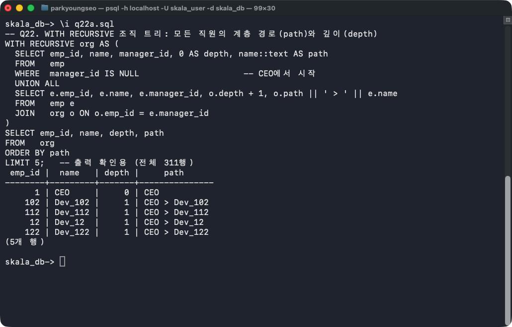
실행 결과 ① — psql (쿼리 2 — direct_reports)
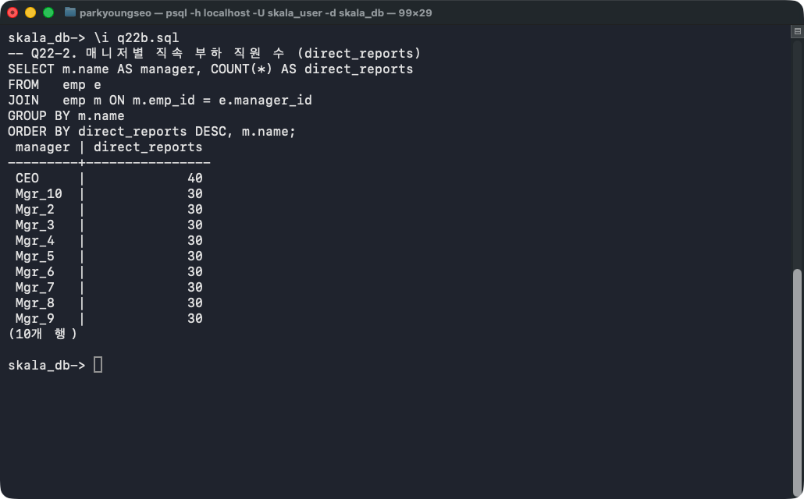
실행 결과 ② — pgAdmin 4 Query Tool (위: 쿼리 1 · 아래: 쿼리 2)
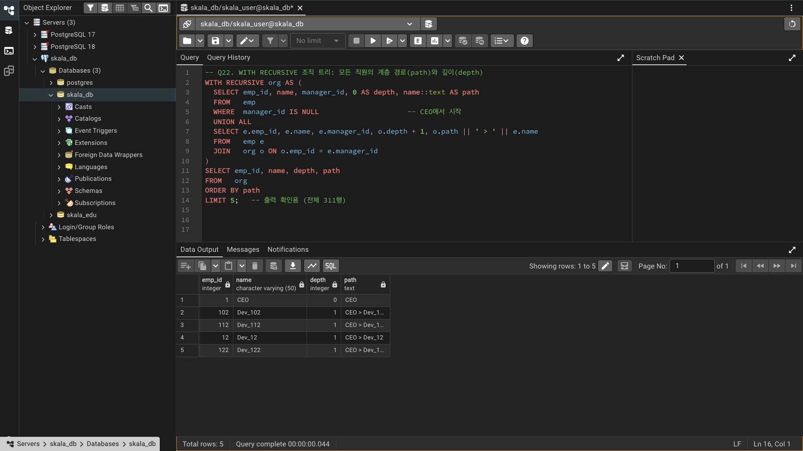
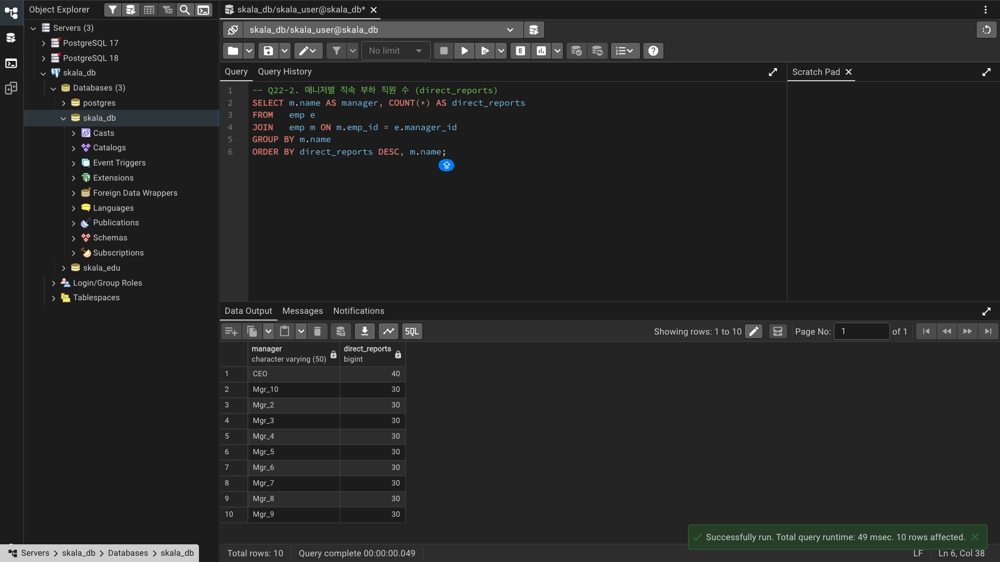
(a) WITH RECURSIVE — depth 0=CEO, path 'CEO > …' 형식 (전체 311행) → (b) 매니저별 direct_reports 집계 (10행).
23. 학과별 GPA 상위 3명 — Window Function (서브쿼리 방식 + CTE 방식)
SQL — 방식 1 (서브쿼리)
-- Q23. 학과별 GPA 상위 3명 — Window Function (서브쿼리 방식과 CTE 방식 모두 작성)
-- ROW_NUMBER(동점 시 student_id 2차) + RANK/DENSE_RANK 비교 + COUNT() OVER
-- [방식 1] 서브쿼리 방식
SELECT student_id, name, major, gpa, rn, rnk, drnk, total_in_major
FROM (
SELECT student_id, name, major, gpa,
ROW_NUMBER() OVER (PARTITION BY major ORDER BY gpa DESC, student_id) AS rn,
RANK() OVER (PARTITION BY major ORDER BY gpa DESC) AS rnk,
DENSE_RANK() OVER (PARTITION BY major ORDER BY gpa DESC) AS drnk,
COUNT(*) OVER (PARTITION BY major) AS total_in_major
FROM student
) x
WHERE rn <= 3
ORDER BY major, rn;
실행 결과 ① — psql (방식 1)
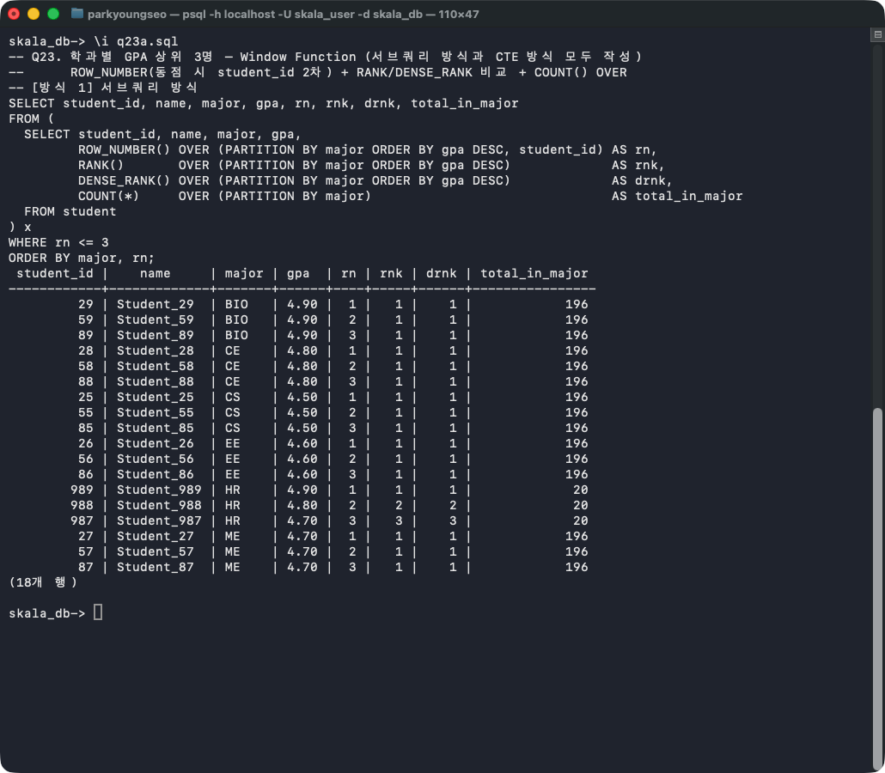
SQL — 방식 2 (CTE)
-- [방식 2] CTE 방식
WITH ranked AS (
SELECT student_id, name, major, gpa,
ROW_NUMBER() OVER (PARTITION BY major ORDER BY gpa DESC, student_id) AS rn,
RANK() OVER (PARTITION BY major ORDER BY gpa DESC) AS rnk,
DENSE_RANK() OVER (PARTITION BY major ORDER BY gpa DESC) AS drnk,
COUNT(*) OVER (PARTITION BY major) AS total_in_major
FROM student
)
SELECT student_id, name, major, gpa, rn, rnk, drnk, total_in_major
FROM ranked
WHERE rn <= 3
ORDER BY major, rn;
실행 결과 ① — psql (방식 2 — 동일 결과)
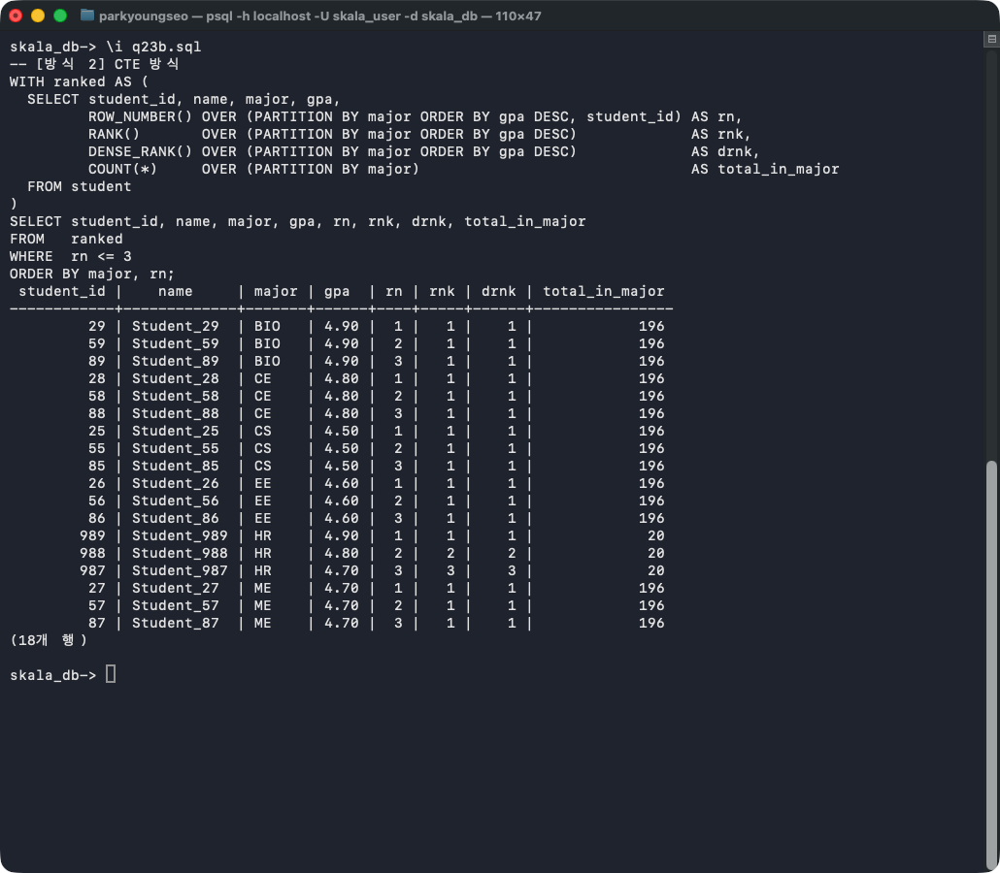
실행 결과 ② — pgAdmin 4 Query Tool (두 방식 연속 실행)
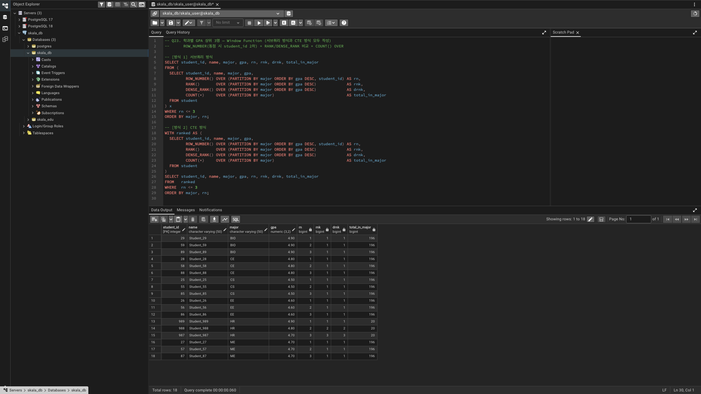
서브쿼리 방식 + CTE 방식 모두 작성 — 동일한 18행. 동점(3인 공동 1위)의 RANK·DENSE_RANK 동작은 BIO·CE·CS·EE·ME에서, 동점 없는 순차 순위(1·2·3)는 HR에서 확인. total_in_major 포함.
24. LAG()로 이전 수강 과목 대비 성적 변화 (diff·추세·score_range)
SQL
-- Q24. LAG()로 학생별 이전 수강 과목 대비 성적 변화 (A=4, B=3, C=2, D=1)
-- diff(현재-이전) + 상승/유지/하락 표시 + 학생별 최고-최저 차(score_range)
SELECT student_id, course, score, prev_score,
diff,
CASE WHEN diff > 0 THEN '상승'
WHEN diff = 0 THEN '유지'
WHEN diff < 0 THEN '하락'
END AS trend,
score_range
FROM (
SELECT student_id, course, score,
LAG(score) OVER (PARTITION BY student_id ORDER BY course) AS prev_score,
score - LAG(score) OVER (PARTITION BY student_id ORDER BY course) AS diff,
MAX(score) OVER (PARTITION BY student_id)
- MIN(score) OVER (PARTITION BY student_id) AS score_range
FROM (
SELECT student_id, course,
CASE grade WHEN 'A' THEN 4 WHEN 'B' THEN 3
WHEN 'C' THEN 2 WHEN 'D' THEN 1 END AS score
FROM enroll
) g
) w
ORDER BY student_id, course
LIMIT 5; -- 출력 확인용 (전체 행 수는 리포트에 별도 표기)
실행 결과 ① — psql
실행 결과 ② — pgAdmin 4 Query Tool
LAG + CASE — 이전 과목 점수와의 diff, 상승/유지/하락 추세, 학생별 score_range (전체 2,302행).
25. 누적 주문금액 + 3개 주문 이동평균 (ROWS BETWEEN) + 전체 합 50% 초과 첫 주문
SQL
-- Q25. orders를 order_id 순으로 정렬하여 누적 주문금액과 3개 주문 이동평균 계산 (ROWS BETWEEN)
-- + customer_id별 PARTITION 고객별 누적 구매금액
SELECT order_id, customer_id, amount,
SUM(amount) OVER (ORDER BY order_id
ROWS BETWEEN UNBOUNDED PRECEDING AND CURRENT ROW) AS running_total,
ROUND(AVG(amount) OVER (ORDER BY order_id
ROWS BETWEEN 2 PRECEDING AND CURRENT ROW), 2) AS moving_avg_3,
SUM(amount) OVER (PARTITION BY customer_id ORDER BY order_id
ROWS BETWEEN UNBOUNDED PRECEDING AND CURRENT ROW) AS cust_running_total
FROM orders
ORDER BY order_id
LIMIT 5; -- 출력 확인용 (전체 3,000행)
-- Q25-2. 누적합이 전체 합의 50%를 초과하는 첫 번째 order_id
SELECT order_id, running_total, total_sum
FROM (
SELECT order_id,
SUM(amount) OVER (ORDER BY order_id
ROWS BETWEEN UNBOUNDED PRECEDING AND CURRENT ROW) AS running_total,
SUM(amount) OVER () AS total_sum
FROM orders
) t
WHERE running_total > total_sum * 0.5
ORDER BY order_id
LIMIT 1;
실행 결과 ① — psql (쿼리 1 — 누적합·이동평균)
실행 결과 ① — psql (쿼리 2 — 50% 초과 첫 주문)
실행 결과 ② — pgAdmin 4 Query Tool (위: 쿼리 1 · 아래: 쿼리 2)
(a) 누적합·3개 이동평균·고객별 누적 (전체 3,000행) → (b) 누적합이 전체 합(7,365,985)의 50%를 최초로 초과하는 주문 = order_id 1503.